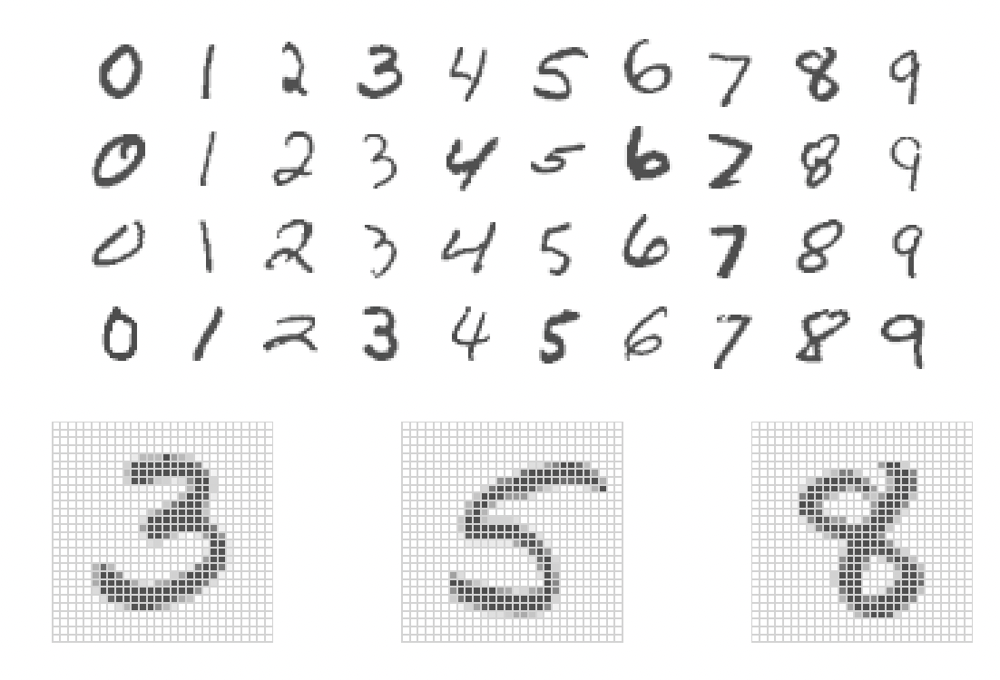
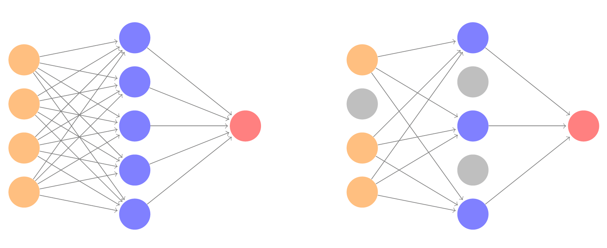
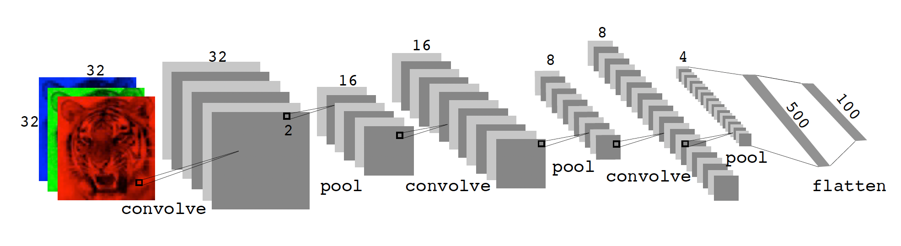
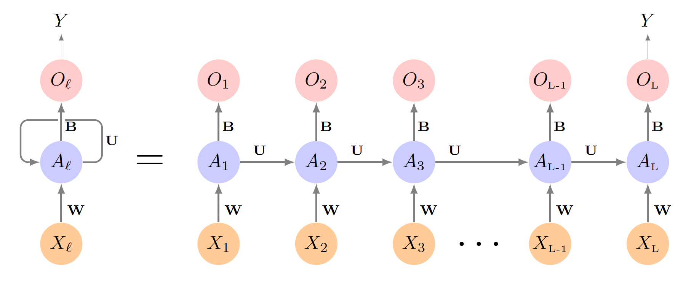

Neural Networks
POLI_SCI 490
Exploration ideas
Pick up a tutorial using a pre-trained neural network or open source LLM (BERT, LLaMA) and apply it to new data
Find a new NN application that does not involve text, images, audio, video, or genomics
Tutorials
Plan for today
Talk
- Intuition behind neural networks
- CNNs (+ application readings)
- RNNs
Coding
- Simple NN in
R PythonIDE options- Pre-trained NN in
Python
Intuition
Two mental shifts
- Regression coefficients are weights
- Multiple transformations help you learn complex decision rules
Two mental shifts
- Regression coefficients are weights
- Multiple transformations help you learn complex decision rules
A linear regression with new names
\[ \widehat y = \beta_0 + \beta_1 x_1 + \beta_2 x_2 \]
Rewrite for an arbitrary number of predictors
A linear regression with new names
\[ \widehat{y} = \beta_0 + \sum_{j=1}^p \beta X \]
Shift: We are not learning outcomes, but functions that explain how the outcome would look like given new data
A linear regression with new names
\[ f(X) = \beta_0 + \sum_{j=1}^p \beta X \]
We learn that we can find the optimal parameter of for \(\beta = (\beta_0, \beta_1, \ldots, \beta_k)\) by using OLS or MLE
Shift: We could just try many different values
A linear regression with new names
\[\begin{equation} f(X) = \beta_0 +\begin{cases} \sum_{j=1}^p \beta_{[1]} X \\ \sum_{j=1}^p \beta_{[2]} X \\ \sum_{j=1}^p \beta_{[3]} X \\ \vdots \\ \sum_{j=1}^p \beta_{[k]} X \end{cases} \end{equation}\]Then we can aggregate with a weighted average
A linear regression with new names
\[ f(X) = \beta_0 + \sum_{k=1}^K\left (\sum_{j=1}^p w_{[k]}\beta_{[k]} X \right ) \]
Shift: The parenthetical is a function \(g(\cdot)\) too
A linear regression with new names
\[ f(X) = \beta_0 + g(w,\beta,X) \]
So we predict \(Y\) with a function that averages over many functions of \(\beta\)s with weight \(w\)
We could use CV to tune \(w\) and \(\beta\)
This is kind of a neural network with no hidden layers
Two mental shifts
- Regression coefficients are weights
- Multiple transformations help you learn complex decision rules
Two mental shifts
- Regression coefficients are weights
- Multiple transformations help you learn complex decision rules
Example: Single hidden layer NN with two nodes (whiteboard)

Single hidden layer with K nodes
\[ \begin{align} f(X) & = & \beta_0 + \sum_{k=1}^K \beta_k \color{purple}{h_k(X)}\\ & = & \beta_0 + \sum_{k=1}^K \beta_k \color{purple}{g(w_{k0} + \sum_{j=1}^p w_{kj} X_j)} \end{align} \]
Moving pieces
Example: MNIST data

- N = 60k training, 10k test
- 784 pixels (variables) per image
- 785 coefficients in input
- Layer 1: 256 nodes
- Layer 2: 128 nodes
- \(785 \times 256 + 257 \times 128 = 233,856\) weights!
We need regularization and efficient parameter search
Regularization
Two options:
Lasso/ridge penalty \(\lambda\)
Dropout rate \(\phi\)
Dropout learning
Optimizing weights and biases
You could try an extremely large grid of possible parameters… but that would take forever
So we take two steps to tune weights and biases efficiently
- Backpropagation
AND
- Gradient descent

Gradient descent

Many decisions
Number of hidden layers
Nodes per layer
Dropout rate/regularization penalty
Stochastic gradient descent batch size
Number of epochs
Data augmentation
In practice: Use pre-trained neural networks
Special types
Convolutional Neural Network
CNN
Convolution layer
\[ \text{Original Image} = \begin{bmatrix} a & b & c \\ d & e & f \\ g & h & i \\ j & k & l \end{bmatrix} \]
\[ \text{Convolution Filter} = \begin{bmatrix} \alpha & \beta \\ \gamma & \delta \end{bmatrix} \]
\[ \text{Convolved Image} = \begin{bmatrix} a\alpha + b\beta + d\gamma + e\delta & b\alpha + c\beta + e\gamma + f\delta \\[6pt] d\alpha + e\beta + g\gamma + h\delta & e\alpha + f\beta + h\gamma + i\delta \\[6pt] g\alpha + h\beta + j\gamma + k\delta & h\alpha + i\beta + k\gamma + l\delta \end{bmatrix} \]
Pooling layer
\[ \text{Max pool } \begin{bmatrix} 1 & 2 & \color{purple}5 & 3 \\ \color{purple}3 & 0 & 1 & 2 \\ \color{purple}2 & 1 & 3 & \color{purple}4 \\ 1 & 1 & 2 & 0 \end{bmatrix} \;\longrightarrow\; \begin{bmatrix} 3 & 5 \\ 2 & 4 \end{bmatrix} \]
Recurrrent Neural Network
RNN
